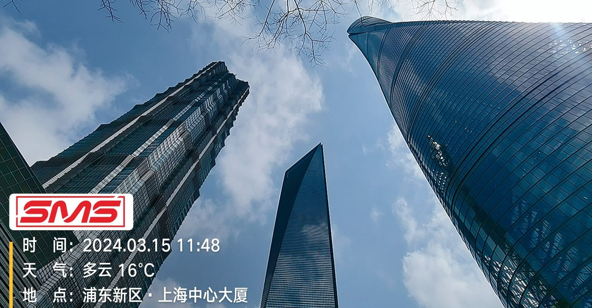

商业地产 · 中央空调
签约时间：2024 年 02 月
上海中心大厦 · 中央空调冷却水系统除垢
管道直径：DN350mm
管道材质：碳钢
设备型号：SMS-E-A006 / A008
所属行业：商业综合体
项目背景
上海中心大厦（Shanghai Tower）高 632 米，为中国第二高楼、世界第三高楼。其中央空调系统规模庞大，冷却水循环流量大、管线长，传统化学加药方式存在药剂残留风险且运维成本高昂。
解决方案
在冷却塔回水管路部署分布式电磁阻垢系统（SMS-E-A006 与 A008 多机并联），通过变频电磁场改变碳酸钙结晶形态，使坚硬方解石转为疏松文石态随水排走，全程无需化学药剂、免停机安装。
实施效果
设备上线后冷却塔填料结垢明显缓解，换热效率稳定提升，中央空调系统能耗降低。作为超高层地标的绿色节能示范项目，为同类商业综合体提供了可复制的物理除垢方案。